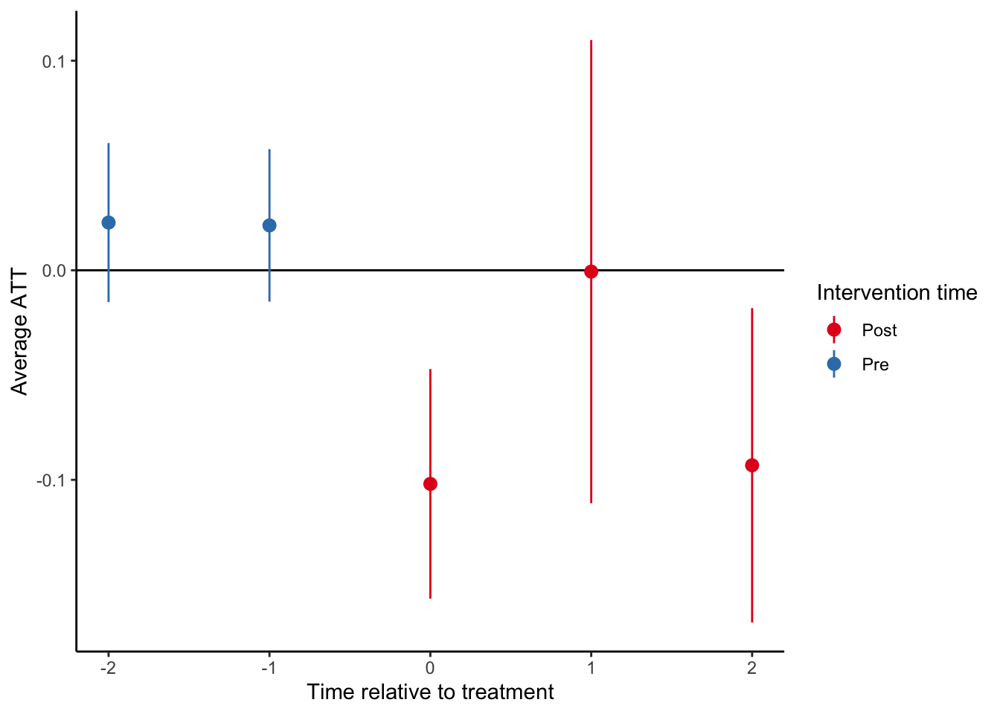

# BHET data
d <- read_rds(here("data-clean",
"bhet-resp-data.rds")) %>%
# limit to complete cases (ignoring bmi)
drop_na(cresp:farm_4, -bmi)
# separate datasets for men and women
dm <- d %>% filter(male==1)
df <- d %>% filter(male==0)Testing for Heterogeneity
Without covariates
As we have discussed, if you want to estimate separate ATTs for men and women (or any other subgroups) in a DiD specification, you have to include product terms between the subgroups identifier (e.g., male) and each of the cohort fixed effects, time fixed effects, and the time-varying treatment indicator. If there are no covariates in the model apart from the fixed effects, then this is exactly equivalent to running separate regression models and then testing whether the difference between the ATTs for each subgroup is 0.
Let’s do this for the outcome of frequency of shortness of breath most or several days a week (breath):
Logistic regression models separately by sex:
m1_m <- glm(breath ~ treat:cohort_year_2019:year_2019 +
treat:cohort_year_2019:year_2021 +
treat:cohort_year_2020:year_2021 +
treat:cohort_year_2021:year_2021 +
cohort_year_2019 + cohort_year_2020 +
cohort_year_2021 + year_2019 + year_2021,
data = dm)
m1_f <- glm(breath ~ treat:cohort_year_2019:year_2019 +
treat:cohort_year_2019:year_2021 +
treat:cohort_year_2020:year_2021 +
treat:cohort_year_2021:year_2021 +
cohort_year_2019 + cohort_year_2020 +
cohort_year_2021 + year_2019 + year_2021,
data = df)
modelsummary(list("Men" = m1_m,
"Women" = m1_f), gof_map = c("nobs"),
title = "Basic ETWFE models for trouble breathing for men and women")| Men | Women | |
|---|---|---|
| (Intercept) | 0.212 | 0.345 |
| (0.026) | (0.024) | |
| cohort_year_2019 | 0.026 | 0.073 |
| (0.054) | (0.051) | |
| cohort_year_2020 | 0.011 | 0.083 |
| (0.043) | (0.040) | |
| cohort_year_2021 | 0.148 | 0.017 |
| (0.070) | (0.060) | |
| year_2019 | 0.029 | 0.017 |
| (0.033) | (0.031) | |
| year_2021 | -0.015 | -0.007 |
| (0.038) | (0.035) | |
| treat × cohort_year_2019 × year_2019 | -0.024 | -0.068 |
| (0.072) | (0.069) | |
| treat × cohort_year_2019 × year_2021 | 0.023 | -0.118 |
| (0.075) | (0.072) | |
| treat × year_2021 × cohort_year_2020 | 0.068 | -0.040 |
| (0.076) | (0.071) | |
| treat × year_2021 × cohort_year_2021 | 0.067 | -0.093 |
| (0.127) | (0.098) | |
| Num.Obs. | 1245 | 1831 |
Here you can see that some of the treatment effect coefficients appear to be different for men and women. For example, the impact of the policy on the cohort first treated in 2021 in the year 2021 (treat × year_2021 × cohort_year_2021) is 0.067 for men but in the opposite direction (-0.09) for women. But for now let’s just look at the overall average ATTs for each group separately:
# marginal effect for men
me_m1_m <- slopes(m1_m,
newdata = subset(dm, treat==1),
variables = "treat",
by = "treat",
vcov = ~v_id)
# marginal effect for women
me_m1_f <- slopes(m1_f,
newdata = subset(df, treat==1),
variables = "treat",
by = "treat",
vcov = ~v_id)
modelsummary(list("Men" = me_m1_m,
"Women" = me_m1_f), gof_map = c("nobs"),
title = "Average ATTs no trouble breathing for men and women")| Men | Women | |
|---|---|---|
| treat | 0.018 | -0.080 |
| (0.045) | (0.034) | |
| Num.Obs. | 1245 | 1831 |
From these ATTs we can see that the effect is larger among women (-0.08) compared to men (0.018) and the difference is around -0.098 or 10 percentage points lower among women, but we don’t have a test or a confidence interval for that difference.
Since these models are estimated separately, we can’t use the hypothesis function to simply test whether the difference in ATT is different from zero.
Talia showed how you can do this ‘by hand’ using the estimates and standard errors from marginal effect estimates:
e_women = me_m1_f$estimate # ATT among women
e_men = me_m1_m$estimate # ATT among men
diff = e_women-e_men # difference in ATTs between subgroups
se_women = me_m1_f$std.error # standard error for women
se_men = me_m1_m$std.error # standard error for men
se_d = sqrt(se_women^2 + se_men^2) # standard error of difference
n_women = m1_f$df.null + 1
n_men = m1_m$df.null + 1
n_total = n_women + n_men
degf = n_total - 2
t = diff/se_d # calculate t-statistic
2*pt(q = abs(t), df = degf, lower.tail = F) [1] 0.08044549# 2-sided probability of observing your test-statistic ('t') or greater assuming the null hypothesis is true.
# 95% CI for the difference in means
ci <- diff + c(-1, 1)*1.96*se_d
paste0(round(diff,3), ", (", round(ci[1],3), ",", round(ci[2],3), ")")[1] "-0.098, (-0.208,0.012)"Talia’s code confirms that the ATT is 0.098 lower among women with a p-value of 0.08 and a 95% CI of (-0.21, 0.12).
However, note that we can retrieve exactly these same estimates from running a single model that allows all of the coefficients to vary by male:
m1 <- glm(breath ~ male * (treat:cohort_year_2019:year_2019 +
treat:cohort_year_2019:year_2021 +
treat:cohort_year_2020:year_2021 +
treat:cohort_year_2021:year_2021 +
cohort_year_2019 + cohort_year_2020 +
cohort_year_2021 + year_2019 + year_2021),
data = d)
# model results
modelsummary(list("Men" = m1_m,
"Women" = m1_f, "Both" = m1),
gof_map = c("nobs"))| Men | Women | Both | |
|---|---|---|---|
| (Intercept) | 0.212 | 0.345 | 0.345 |
| (0.026) | (0.024) | (0.023) | |
| cohort_year_2019 | 0.026 | 0.073 | 0.073 |
| (0.054) | (0.051) | (0.048) | |
| cohort_year_2020 | 0.011 | 0.083 | 0.083 |
| (0.043) | (0.040) | (0.039) | |
| cohort_year_2021 | 0.148 | 0.017 | 0.017 |
| (0.070) | (0.060) | (0.057) | |
| year_2019 | 0.029 | 0.017 | 0.017 |
| (0.033) | (0.031) | (0.029) | |
| year_2021 | -0.015 | -0.007 | -0.007 |
| (0.038) | (0.035) | (0.033) | |
| treat × cohort_year_2019 × year_2019 | -0.024 | -0.068 | -0.068 |
| (0.072) | (0.069) | (0.065) | |
| treat × cohort_year_2019 × year_2021 | 0.023 | -0.118 | -0.118 |
| (0.075) | (0.072) | (0.069) | |
| treat × year_2021 × cohort_year_2020 | 0.068 | -0.040 | -0.040 |
| (0.076) | (0.071) | (0.067) | |
| treat × year_2021 × cohort_year_2021 | 0.067 | -0.093 | -0.093 |
| (0.127) | (0.098) | (0.094) | |
| male | -0.133 | ||
| (0.036) | |||
| male × cohort_year_2019 | -0.047 | ||
| (0.076) | |||
| male × cohort_year_2020 | -0.072 | ||
| (0.060) | |||
| male × cohort_year_2021 | 0.131 | ||
| (0.095) | |||
| male × year_2019 | 0.012 | ||
| (0.046) | |||
| male × year_2021 | -0.009 | ||
| (0.053) | |||
| male × treat × cohort_year_2019 × year_2019 | 0.044 | ||
| (0.101) | |||
| male × treat × cohort_year_2019 × year_2021 | 0.141 | ||
| (0.106) | |||
| male × treat × year_2021 × cohort_year_2020 | 0.108 | ||
| (0.106) | |||
| male × treat × year_2021 × cohort_year_2021 | 0.160 | ||
| (0.167) | |||
| Num.Obs. | 1245 | 1831 | 3076 |
Here you can see that the saturated single model gives identical results to the separate models. For example, the estimate for treat × cohort_year_2019 × year_2019 for men is -0.024. This is precisely the sum of the estimate for women (-0.068) plus the product term that allows for this effect to differ between men and women (male × treat × cohort_year_2019 × year_2019), which is 0.044.
This means that we can also get the marginal ATTs from this single model for both men and women:
# marginal ATTs by sex
me_m1 <- slopes(m1,
newdata = subset(d, treat==1),
variables = "treat",
by = c("treat", "male"),
vcov = ~v_id)
me_m1
treat male Estimate Std. Error z Pr(>|z|) S 2.5 % 97.5 %
1 0 -0.0800 0.0337 -2.373 0.0177 5.8 -0.1460 -0.0139
1 1 0.0182 0.0449 0.405 0.6852 0.5 -0.0698 0.1062
Term: treat
Type: response
Comparison: 1 - 0As well as the difference in ATTs:
# difference in ATTs
me_m1_d <- slopes(m1,
newdata = subset(d, treat==1),
variables = "treat",
by = c("treat", "male"),
hypothesis = "b1 - b2 = 0",
vcov = ~v_id)
me_m1_d
Hypothesis Estimate Std. Error z Pr(>|z|) S 2.5 % 97.5 %
b1-b2=0 -0.0981 0.0558 -1.76 0.0784 3.7 -0.207 0.0111
Type: responseHere is a summary of the ATTs and 95% CIs:
me_m1_women <- slopes(m1,
newdata = subset(d, treat==1),
variables = "treat",
by = c("treat", "male"),
vcov = ~v_id, hypothesis = "b1 = 0")
me_m1_men <- slopes(m1,
newdata = subset(d, treat==1),
variables = "treat",
by = c("treat", "male"),
vcov = ~v_id, hypothesis = "b2 = 0")
modelsummary(list("Men" = me_m1_men,
"Women" = me_m1_women,
"Difference" = me_m1_d),
coef_map = c("b2=0" = "ATT",
"b1=0" = "ATT", "b1-b2=0" = "ATT"),
statistic = "conf.int",
gof_omit ='._*')| Men | Women | Difference | |
|---|---|---|---|
| ATT | 0.018 | -0.080 | -0.098 |
| [-0.070, 0.106] | [-0.146, -0.014] | [-0.207, 0.011] |
With covariates
Logistic regression models with covariates separately by sex:
m2_m <- glm(breath ~ treat:cohort_year_2019:year_2019 +
treat:cohort_year_2019:year_2021 +
treat:cohort_year_2020:year_2021 +
treat:cohort_year_2021:year_2021 +
cohort_year_2019 + cohort_year_2020 +
cohort_year_2021 + year_2019 + year_2021 +
age_health + ets_2 + ets_3 + ets_4 +
occ_2 + occ_3 + occ_4 +
drink_2 + drink_3 + drink_4 +
farm_2 + farm_3 + farm_4,
data = dm)
m2_f <- glm(breath ~ treat:cohort_year_2019:year_2019 +
treat:cohort_year_2019:year_2021 +
treat:cohort_year_2020:year_2021 +
treat:cohort_year_2021:year_2021 +
cohort_year_2019 + cohort_year_2020 +
cohort_year_2021 + year_2019 + year_2021 +
age_health + ets_2 + ets_3 + ets_4 +
occ_2 + occ_3 + occ_4 +
drink_2 + drink_3 + drink_4 +
farm_2 + farm_3 + farm_4,
data = df)
modelsummary(list("Men" = m2_m,
"Women" = m2_f), gof_map = c("nobs"),
title = "Adjusted ETWFE models for no trouble breathing for men and women")| Men | Women | |
|---|---|---|
| (Intercept) | -0.014 | 0.065 |
| (0.099) | (0.099) | |
| cohort_year_2019 | 0.023 | 0.100 |
| (0.053) | (0.051) | |
| cohort_year_2020 | -0.011 | 0.066 |
| (0.042) | (0.040) | |
| cohort_year_2021 | 0.102 | 0.042 |
| (0.068) | (0.060) | |
| year_2019 | 0.022 | 0.018 |
| (0.032) | (0.031) | |
| year_2021 | -0.041 | -0.017 |
| (0.038) | (0.035) | |
| age_health | 0.005 | 0.005 |
| (0.001) | (0.001) | |
| ets_2 | 0.097 | 0.072 |
| (0.027) | (0.082) | |
| ets_3 | -0.140 | -0.002 |
| (0.080) | (0.049) | |
| ets_4 | -0.039 | -0.010 |
| (0.039) | (0.052) | |
| occ_2 | -0.003 | -0.370 |
| (0.064) | (0.182) | |
| occ_3 | -0.084 | -0.154 |
| (0.041) | (0.049) | |
| occ_4 | 0.009 | -0.009 |
| (0.029) | (0.026) | |
| drink_2 | -0.101 | -0.013 |
| (0.036) | (0.028) | |
| drink_3 | -0.058 | -0.018 |
| (0.041) | (0.060) | |
| drink_4 | -0.079 | -0.097 |
| (0.030) | (0.060) | |
| farm_2 | -0.039 | -0.027 |
| (0.031) | (0.028) | |
| farm_3 | -0.083 | -0.073 |
| (0.034) | (0.035) | |
| farm_4 | -0.006 | -0.054 |
| (0.037) | (0.045) | |
| treat × cohort_year_2019 × year_2019 | -0.023 | -0.072 |
| (0.070) | (0.068) | |
| treat × cohort_year_2019 × year_2021 | 0.034 | -0.129 |
| (0.073) | (0.072) | |
| treat × year_2021 × cohort_year_2020 | 0.070 | -0.024 |
| (0.074) | (0.070) | |
| treat × year_2021 × cohort_year_2021 | 0.099 | -0.108 |
| (0.125) | (0.098) | |
| Num.Obs. | 1244 | 1830 |
You’ll notice that running separate models also allows for each of the covariates to differ for men and women. For example, the coefficient on occ_2 is -0.003 for men but -0.370 for women. However, on the whole there are not large differences in most of the coefficients between men and women. Now let’s estimate the marginal effects separately by gender:
# marginal effect for men
me_m2_m <- slopes(m2_m,
newdata = subset(dm, treat==1),
variables = "treat",
by = "treat",
vcov = ~v_id)
# marginal effect for women
me_m2_f <- slopes(m2_f,
newdata = subset(df, treat==1),
variables = "treat",
by = "treat",
vcov = ~v_id)
modelsummary(list("Men" = me_m2_m,
"Women" = me_m2_f),
gof_map = c("nobs"),
title = "Average ATTs no trouble breathing for men and women")| Men | Women | |
|---|---|---|
| treat | 0.025 | -0.083 |
| (0.046) | (0.033) | |
| Num.Obs. | 1244 | 1830 |
Note that these estimates from the models with covariates are slightly different from the models without covariates, but qualitatively the same. Are these estimates different from one another? Let’s see:
e_women = me_m2_f$estimate # ATT among women
e_men = me_m2_m$estimate # ATT among men
diff = e_women-e_men # difference in ATTs between subgroups
se_women = me_m2_f$std.error # standard error for women
se_men = me_m2_m$std.error # standard error for men
se_d = sqrt(se_women^2 + se_men^2) # standard error of difference
n_women = m2_f$df.null + 1
n_men = m2_m$df.null + 1
n_total = n_women + n_men
degf = n_total - 2
t = diff/se_d # calculate t-statistic
2*pt(q = abs(t), df = degf, lower.tail = F) # p = 0.5918353[1] 0.05884761# 2-sided probability of observing your test-statistic ('t') or greater assuming the null hypothesis is true.
# 95% CI for the difference in means
ci <- diff + c(-1, 1)*1.96*se_d
paste0(round(diff,3), ", (", round(ci[1],3), ",", round(ci[2],3), ")")[1] "-0.107, (-0.219,0.004)"We see that the difference in the ATT between women and men is -0.107, with a 95% CI of (-0.219, 0.004) and a p-value of 0.059.
Now let’s estimate a single model that allows the treatment effect to differ between men and women and adjusts for covariates, but assumes that the impact of the covariates is similar for men and women:
m2 <- glm(breath ~ male * (treat:cohort_year_2019:year_2019 +
treat:cohort_year_2019:year_2021 +
treat:cohort_year_2020:year_2021 +
treat:cohort_year_2021:year_2021 +
cohort_year_2019 + cohort_year_2020 +
cohort_year_2021 + year_2019 + year_2021) +
age_health + ets_2 + ets_3 + ets_4 +
occ_2 + occ_3 + occ_4 +
drink_2 + drink_3 + drink_4 +
farm_2 + farm_3 + farm_4,
data = d)
# model results
modelsummary(list("Men" = m2_m,
"Women" = m2_f, "Both" = m2),
gof_map = c("nobs"))| Men | Women | Both | |
|---|---|---|---|
| (Intercept) | -0.014 | 0.065 | 0.095 |
| (0.099) | (0.099) | (0.071) | |
| cohort_year_2019 | 0.023 | 0.100 | 0.090 |
| (0.053) | (0.051) | (0.048) | |
| cohort_year_2020 | -0.011 | 0.066 | 0.062 |
| (0.042) | (0.040) | (0.038) | |
| cohort_year_2021 | 0.102 | 0.042 | 0.049 |
| (0.068) | (0.060) | (0.057) | |
| year_2019 | 0.022 | 0.018 | 0.019 |
| (0.032) | (0.031) | (0.029) | |
| year_2021 | -0.041 | -0.017 | -0.017 |
| (0.038) | (0.035) | (0.033) | |
| age_health | 0.005 | 0.005 | 0.005 |
| (0.001) | (0.001) | (0.001) | |
| ets_2 | 0.097 | 0.072 | 0.089 |
| (0.027) | (0.082) | (0.028) | |
| ets_3 | -0.140 | -0.002 | -0.023 |
| (0.080) | (0.049) | (0.031) | |
| ets_4 | -0.039 | -0.010 | -0.032 |
| (0.039) | (0.052) | (0.031) | |
| occ_2 | -0.003 | -0.370 | -0.067 |
| (0.064) | (0.182) | (0.064) | |
| occ_3 | -0.084 | -0.154 | -0.120 |
| (0.041) | (0.049) | (0.032) | |
| occ_4 | 0.009 | -0.009 | -0.002 |
| (0.029) | (0.026) | (0.019) | |
| drink_2 | -0.101 | -0.013 | -0.038 |
| (0.036) | (0.028) | (0.022) | |
| drink_3 | -0.058 | -0.018 | -0.029 |
| (0.041) | (0.060) | (0.034) | |
| drink_4 | -0.079 | -0.097 | -0.058 |
| (0.030) | (0.060) | (0.026) | |
| farm_2 | -0.039 | -0.027 | -0.032 |
| (0.031) | (0.028) | (0.021) | |
| farm_3 | -0.083 | -0.073 | -0.076 |
| (0.034) | (0.035) | (0.025) | |
| farm_4 | -0.006 | -0.054 | -0.033 |
| (0.037) | (0.045) | (0.029) | |
| treat × cohort_year_2019 × year_2019 | -0.023 | -0.072 | -0.066 |
| (0.070) | (0.068) | (0.065) | |
| treat × cohort_year_2019 × year_2021 | 0.034 | -0.129 | -0.119 |
| (0.073) | (0.072) | (0.068) | |
| treat × year_2021 × cohort_year_2020 | 0.070 | -0.024 | -0.021 |
| (0.074) | (0.070) | (0.067) | |
| treat × year_2021 × cohort_year_2021 | 0.099 | -0.108 | -0.109 |
| (0.125) | (0.098) | (0.093) | |
| male | -0.136 | ||
| (0.042) | |||
| male × cohort_year_2019 | -0.066 | ||
| (0.075) | |||
| male × cohort_year_2020 | -0.072 | ||
| (0.060) | |||
| male × cohort_year_2021 | 0.054 | ||
| (0.094) | |||
| male × year_2019 | 0.005 | ||
| (0.045) | |||
| male × year_2021 | -0.015 | ||
| (0.052) | |||
| male × treat × cohort_year_2019 × year_2019 | 0.040 | ||
| (0.100) | |||
| male × treat × cohort_year_2019 × year_2021 | 0.151 | ||
| (0.105) | |||
| male × treat × year_2021 × cohort_year_2020 | 0.097 | ||
| (0.105) | |||
| male × treat × year_2021 × cohort_year_2021 | 0.203 | ||
| (0.164) | |||
| Num.Obs. | 1244 | 1830 | 3074 |
Now get the marginal ATTs from this single model with covariates for both men and women:
# marginal ATTs by sex
me_m2 <- slopes(m2,
newdata = subset(d, treat==1),
variables = "treat",
by = c("treat", "male"),
vcov = ~v_id)
me_m2
treat male Estimate Std. Error z Pr(>|z|) S 2.5 % 97.5 %
1 0 -0.0770 0.0328 -2.344 0.0191 5.7 -0.1413 -0.0126
1 1 0.0238 0.0464 0.512 0.6086 0.7 -0.0672 0.1148
Term: treat
Type: response
Comparison: 1 - 0As well as the difference in ATTs:
# difference in ATTs
me_m2_d <- slopes(m2,
newdata = subset(d, treat==1),
variables = "treat",
by = c("treat", "male"),
hypothesis = "b1 - b2 = 0",
vcov = ~v_id)
me_m2_d
Hypothesis Estimate Std. Error z Pr(>|z|) S 2.5 % 97.5 %
b1-b2=0 -0.101 0.0535 -1.88 0.0596 4.1 -0.206 0.00406
Type: responseSummary of estimates:
me_m2_women <- slopes(m2,
newdata = subset(d, treat==1),
variables = "treat",
by = c("treat", "male"),
vcov = ~v_id, hypothesis = "b1 = 0")
me_m2_men <- slopes(m2,
newdata = subset(d, treat==1),
variables = "treat",
by = c("treat", "male"),
vcov = ~v_id, hypothesis = "b2 = 0")
modelsummary(list("Men" = me_m2_men,
"Women" = me_m2_women,
"Difference" = me_m2_d),
coef_map = c("b2=0" = "ATT",
"b1=0" = "ATT", "b1-b2=0" = "ATT"),
statistic = "conf.int",
gof_omit ='._*')| Men | Women | Difference | |
|---|---|---|---|
| ATT | 0.024 | -0.077 | -0.101 |
| [-0.067, 0.115] | [-0.141, -0.013] | [-0.206, 0.004] |
One thing that we notice here is that the magnitude of the ATTs for both men and women is not the same for this model as for the separate models with covariates, although the overall difference in the ATT for men and women is largely the same.
But the point here is that comparing the treatment effects from separate models also includes differences in how the covariates enter the model, so in some respects this depends on whether you think you need conditional parallel trends that are also different for the two groups.
These give different answers with respect to the marginal ATTs because the marginal predictions are based on plugging in the values of of covariate coefficients to generate the predictions. For the saturated model this are the same values for men and women, but for the separate models the coefficients differ, which is why the marginal predictions also differ slightly.
What you sacrifice by using a single model is some precision. You can see from the estimates we got above that using separate models loses some precision. For the separate models, the standard error for the difference is 0.0568, whereas for the pooled model it is 0.0535. Again, not a huge difference but if have many covariates this could be consequential because the separate models allow for the covariates to differ.
Some of the lost precision is due to the fact that the covariates are mostly not different by sex, which adds noise to the predictions. You can see this by running a fully saturated model that interacts male with all of the fixed effects and the covariates:
m2_sat <- glm(breath ~ male * (treat:cohort_year_2019:year_2019 +
treat:cohort_year_2019:year_2021 +
treat:cohort_year_2020:year_2021 +
treat:cohort_year_2021:year_2021 +
cohort_year_2019 + cohort_year_2020 +
cohort_year_2021 + year_2019 + year_2021 +
age_health + ets_2 + ets_3 + ets_4 +
occ_2 + occ_3 + occ_4 +
drink_2 + drink_3 + drink_4 +
farm_2 + farm_3 + farm_4),
data = d)
modelsummary(list("Men" = m2_m,
"Women" = m2_f, "Both" = m2, "Saturated" = m2_sat),
gof_map = c("nobs"))| Men | Women | Both | Saturated | |
|---|---|---|---|---|
| (Intercept) | -0.014 | 0.065 | 0.095 | 0.065 |
| (0.099) | (0.099) | (0.071) | (0.094) | |
| cohort_year_2019 | 0.023 | 0.100 | 0.090 | 0.100 |
| (0.053) | (0.051) | (0.048) | (0.048) | |
| cohort_year_2020 | -0.011 | 0.066 | 0.062 | 0.066 |
| (0.042) | (0.040) | (0.038) | (0.038) | |
| cohort_year_2021 | 0.102 | 0.042 | 0.049 | 0.042 |
| (0.068) | (0.060) | (0.057) | (0.057) | |
| year_2019 | 0.022 | 0.018 | 0.019 | 0.018 |
| (0.032) | (0.031) | (0.029) | (0.029) | |
| year_2021 | -0.041 | -0.017 | -0.017 | -0.017 |
| (0.038) | (0.035) | (0.033) | (0.033) | |
| age_health | 0.005 | 0.005 | 0.005 | 0.005 |
| (0.001) | (0.001) | (0.001) | (0.001) | |
| ets_2 | 0.097 | 0.072 | 0.089 | 0.072 |
| (0.027) | (0.082) | (0.028) | (0.078) | |
| ets_3 | -0.140 | -0.002 | -0.023 | -0.002 |
| (0.080) | (0.049) | (0.031) | (0.047) | |
| ets_4 | -0.039 | -0.010 | -0.032 | -0.010 |
| (0.039) | (0.052) | (0.031) | (0.050) | |
| occ_2 | -0.003 | -0.370 | -0.067 | -0.370 |
| (0.064) | (0.182) | (0.064) | (0.173) | |
| occ_3 | -0.084 | -0.154 | -0.120 | -0.154 |
| (0.041) | (0.049) | (0.032) | (0.047) | |
| occ_4 | 0.009 | -0.009 | -0.002 | -0.009 |
| (0.029) | (0.026) | (0.019) | (0.025) | |
| drink_2 | -0.101 | -0.013 | -0.038 | -0.013 |
| (0.036) | (0.028) | (0.022) | (0.026) | |
| drink_3 | -0.058 | -0.018 | -0.029 | -0.018 |
| (0.041) | (0.060) | (0.034) | (0.057) | |
| drink_4 | -0.079 | -0.097 | -0.058 | -0.097 |
| (0.030) | (0.060) | (0.026) | (0.057) | |
| farm_2 | -0.039 | -0.027 | -0.032 | -0.027 |
| (0.031) | (0.028) | (0.021) | (0.026) | |
| farm_3 | -0.083 | -0.073 | -0.076 | -0.073 |
| (0.034) | (0.035) | (0.025) | (0.033) | |
| farm_4 | -0.006 | -0.054 | -0.033 | -0.054 |
| (0.037) | (0.045) | (0.029) | (0.042) | |
| treat × cohort_year_2019 × year_2019 | -0.023 | -0.072 | -0.066 | -0.072 |
| (0.070) | (0.068) | (0.065) | (0.065) | |
| treat × cohort_year_2019 × year_2021 | 0.034 | -0.129 | -0.119 | -0.129 |
| (0.073) | (0.072) | (0.068) | (0.068) | |
| treat × year_2021 × cohort_year_2020 | 0.070 | -0.024 | -0.021 | -0.024 |
| (0.074) | (0.070) | (0.067) | (0.067) | |
| treat × year_2021 × cohort_year_2021 | 0.099 | -0.108 | -0.109 | -0.108 |
| (0.125) | (0.098) | (0.093) | (0.093) | |
| male | -0.136 | -0.079 | ||
| (0.042) | (0.143) | |||
| male × cohort_year_2019 | -0.066 | -0.077 | ||
| (0.075) | (0.075) | |||
| male × cohort_year_2020 | -0.072 | -0.076 | ||
| (0.060) | (0.060) | |||
| male × cohort_year_2021 | 0.054 | 0.060 | ||
| (0.094) | (0.094) | |||
| male × year_2019 | 0.005 | 0.004 | ||
| (0.045) | (0.046) | |||
| male × year_2021 | -0.015 | -0.024 | ||
| (0.052) | (0.053) | |||
| male × treat × cohort_year_2019 × year_2019 | 0.040 | 0.049 | ||
| (0.100) | (0.100) | |||
| male × treat × cohort_year_2019 × year_2021 | 0.151 | 0.163 | ||
| (0.105) | (0.105) | |||
| male × treat × year_2021 × cohort_year_2020 | 0.097 | 0.093 | ||
| (0.105) | (0.105) | |||
| male × treat × year_2021 × cohort_year_2021 | 0.203 | 0.207 | ||
| (0.164) | (0.165) | |||
| male × age_health | -0.000 | |||
| (0.002) | ||||
| male × ets_2 | 0.025 | |||
| (0.083) | ||||
| male × ets_3 | -0.138 | |||
| (0.099) | ||||
| male × ets_4 | -0.028 | |||
| (0.066) | ||||
| male × occ_2 | 0.367 | |||
| (0.187) | ||||
| male × occ_3 | 0.071 | |||
| (0.064) | ||||
| male × occ_4 | 0.018 | |||
| (0.040) | ||||
| male × drink_2 | -0.089 | |||
| (0.048) | ||||
| male × drink_3 | -0.040 | |||
| (0.073) | ||||
| male × drink_4 | 0.018 | |||
| (0.066) | ||||
| male × farm_2 | -0.012 | |||
| (0.043) | ||||
| male × farm_3 | -0.010 | |||
| (0.050) | ||||
| male × farm_4 | 0.048 | |||
| (0.059) | ||||
| Num.Obs. | 1244 | 1830 | 3074 | 3074 |
Now you can see that we are estimating 13 extra parameters by allowing the covariates to vary by gender. You can actually run a ‘chunk test’ to see if these covariates matter, which is basically an F-test for the joint null that any of these coefficients are different from zero:
library(car)Loading required package: carData
Attaching package: 'car'The following object is masked from 'package:dplyr':
recodeThe following object is masked from 'package:purrr':
somelinearHypothesis(m2_sat, c("male:age_health=0", "male:ets_2=0", "male:ets_3=0", "male:ets_4=0", "male:occ_2=0", "male:occ_3=0", "male:occ_4=0", "male:farm_2=0", "male:farm_3=0", "male:farm_4=0", "male:drink_2=0", "male:drink_3=0", "male:drink_4=0"))
Linear hypothesis test:
male:age_health = 0
male:ets_2 = 0
male:ets_3 = 0
male:ets_4 = 0
male:occ_2 = 0
male:occ_3 = 0
male:occ_4 = 0
male:farm_2 = 0
male:farm_3 = 0
male:farm_4 = 0
male:drink_2 = 0
male:drink_3 = 0
male:drink_4 = 0
Model 1: restricted model
Model 2: breath ~ male * (treat:cohort_year_2019:year_2019 + treat:cohort_year_2019:year_2021 +
treat:cohort_year_2020:year_2021 + treat:cohort_year_2021:year_2021 +
cohort_year_2019 + cohort_year_2020 + cohort_year_2021 +
year_2019 + year_2021 + age_health + ets_2 + ets_3 + ets_4 +
occ_2 + occ_3 + occ_4 + drink_2 + drink_3 + drink_4 + farm_2 +
farm_3 + farm_4)
Res.Df Df Chisq Pr(>Chisq)
1 3041
2 3028 13 12.382 0.4966There isn’t strong evidence that these covariate coefficients differ by sex, so you could pool these and using a single model to gain some precision. As expected, the fully saturated model gives the same marginal ATTs as the separate model:
me_m2_sat <- slopes(m2_sat,
newdata = subset(d, treat==1),
variables = "treat",
by = c("treat", "male"),
vcov = ~v_id)
me_m2_sat
treat male Estimate Std. Error z Pr(>|z|) S 2.5 % 97.5 %
1 0 -0.0826 0.0330 -2.505 0.0122 6.4 -0.1473 -0.018
1 1 0.0247 0.0462 0.534 0.5934 0.8 -0.0659 0.115
Term: treat
Type: response
Comparison: 1 - 0Event study plots
If you want to use ‘event study’ type plots, here is how it can be done. Let’s refit the model without covariates for simplicity:
# data
esd <- read_rds(here("data-clean",
"bhet-resp-data.rds")) %>%
drop_na(cresp:farm_4, -bmi) %>%
mutate(
# add event indicators
event = year - cohort_year,
# add indicator for ever treated
evtreat = if_else(cohort_year!=-Inf,1,0))
# logit model for shortness of breath
esm <- glm(
breath ~ treat:cohort_year_2019:year_2019 +
treat:cohort_year_2019:year_2021 +
treat:cohort_year_2020:year_2019 +
treat:cohort_year_2020:year_2021 +
treat:cohort_year_2021:year_2019 +
treat:cohort_year_2021:year_2021 +
cohort_year_2019 + cohort_year_2020 + cohort_year_2021 +
year_2019 + year_2021,
data = esd, family = "binomial")
# Group effects for ETWFE (by time since treatment)
me_esm <- slopes(
esm,
newdata = subset(esd, treat & event>=0),
variables = "treat",
by = "event",
# make sure to use cluster-robust SEs
vcov = ~v_id)
# estimate the model for pre-periods
esm_pre <- glm(
breath ~ evtreat:cohort_year_2020:year_2019 +
evtreat:cohort_year_2021:year_2019 +
cohort_year_2019 + cohort_year_2020 +
cohort_year_2021 + year_2019 + year_2021,
data = subset(esd, treat==0), family = "binomial")
# slopes for pre-periods
me_esm_pre <-
slopes(esm_pre,
variables = "evtreat",
newdata = subset(esd, treat==0 &
event > -3 & event < 0),
by = "event",
# make sure to use cluster-robust SEs
vcov = ~v_id)
ete <- bind_rows(me_esm_pre, me_esm)
ete %>%
mutate(`Intervention time` =
if_else(event < 0, "Pre", "Post")) %>%
ggplot(aes(x = event, y = estimate, ymin = conf.low,
ymax = conf.high, color = `Intervention time`)) +
geom_hline(yintercept = 0) +
geom_pointrange() + theme_classic() +
scale_color_brewer(palette="Set1")
labs(x = "Time relative to treatment",
y = "ATT")$x
[1] "Time relative to treatment"
$y
[1] "ATT"
attr(,"class")
[1] "labels"